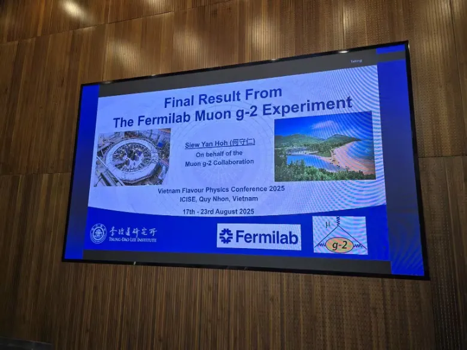

The Flavor Physics Conference is held every three years, bringing together particle physicists from around the world to discuss the latest developments, challenges, and future directions in understanding the Standard Model and physics beyond it.
In 2025, Dr. Hoh Siew Yan from our group attended the conference, which took place on August 17–23 at ICISE, Quy Nhon, Vietnam. He gave a talk on the Muon g-2 Experiment, presenting an overview of the long-awaited final results announced in May 2025.
The measurement of the muon’s anomalous precession frequency has now reached a world-leading precision of 125 parts per billion (ppb), a more than two-fold improvement with the inclusion of data from Runs 4, 5, and 6. Compared with the latest Standard Model prediction, now derived primarily from lattice QCD calculations, the discrepancy between theory and experiment has narrowed. However, the lattice-based prediction remains in tension with earlier data-driven approaches, and the community looks forward to further theoretical refinement in the coming years.
Although the Muon g-2 experiment has concluded, its results stand as the most stringent test of the Standard Model to date, setting a benchmark for future searches for new physics.


味物理会议（Flavor Physics Conference）每三年举办一次，汇聚世界各地的粒子物理学家，共同探讨理解标准模型及超出标准模型新物理的最新进展、挑战与未来方向。
2025年，课题组Hoh Siew Yan博士参加了于8月17日至23日在越南归仁国际跨学科科学与教育中心（ICISE）举行的本届会议，并就Muon g-2实验作报告，全面介绍了2025年5月发布的、备受期待的最终结果。
随着Run 4、5、6数据的加入，缪子反常进动频率的测量精度提高了一倍以上，达到125 ppb（十亿分之一百二十五）的世界领先水平。与目前主要基于格点QCD计算的最新标准模型预言相比，理论与实验之间的偏差已经缩小。然而，基于格点的预言与早期数据驱动方法之间仍存在张力，学界期待未来几年理论计算的进一步完善。
尽管Muon g-2实验已经结束，其结果仍是迄今对标准模型最严格的检验，为未来的新物理搜寻树立了标杆。